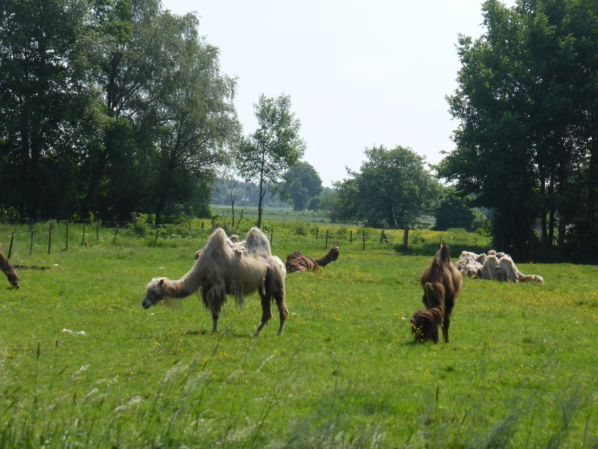

vermeintliche Goldesel und endlose Alleen
Tag 4
Dümmer See - Steller See 75 km
Nach dem Regenschauer am Vorabend wurde ich durch die pralle Sonne wach, die das Zelt zu einer Sauna machte. Dementsprechend schweißtreibend war der Abbau.
Den ganzen Tag ging es dann entlang der B51 in Richtung Bremen. Diese verfügt zwar stehts über einen gut ausgebauten Radweg, doch der Lärm der zahlreichen LKWs macht mir zu schaffen. An einer Stelle musste ich einfach ein paar hundert Meter von der Bundesstraße weg um mich vom ständigen Lärm zu erholen. Danach ging es aber auch schon wieder weiter auf der Bundesstraße. Diese führt stets über eine schier endlose Allee an der es in regelmäßigen Abständen Warntafeln gab um die Autofahrer davon abzuhalten gegen Bäume zu fahren. Man sollte meinen die vielen Kreuze am Straßenrand seien genug Abschreckung. Aber die nimmt man als Autofahrer wahrscheinlich nichtmal wahr, wenn man so durch die Alleen flitzt.
Aber es war nicht alles schlecht an diesem Tag. In Diepholz habe ich mich nach dem Einkaufen sehr nett mit einem Schüler unterhalten, der sehr an meiner Reise interessiert war.
Am Ende war ich heilfroh als ich am Märchencamping kurz vor Bremen ankam. Hier konnte ich mich im Schwimmbad erholen und hab mich bei den ganzen Eseln fast wie Zuhause gefühlt.
Leider ist das Märchen vom Esel, der Gold scheißen kann, eben nur ein Märchen. Auch das Tischlein musste ich selber decken. Ich hatte an den vergangenen Tagen alles mitgeholt, was ich an Stöckchen und Birkenrinde finden konnte, sodass ich mir eine Mahlzeit auf dem Holzvergaser zubereiten konnte. Beim Abwasch musste ich mich ein wenig beeilen, da sich abermals ein Gewitter ankündigte. Ich kam dann auch genau rechtzeitig vor dem ersten kräftigen Schauer am Zelt an.
Tag 5
Steller See - Gnarrenburg 65 + 10 km
Gerade wieder vom Märchencamping gestartet hielt ich nach ungefähr 5 km beim Netto an um ein paar Einkäufe zu erledigen. Als ich auf dem Parkplatz meinen Drahtesel abschließen wollte konnte ich den Schlüssel nicht finden. Nachdem ich die ganze Lenkertasche auf den Kopf gestellt hatte und den Schlüssel nirgentwo finden konnte, war mir klar, dass dieser entweder in den Tiefen einer der vier anderen Taschen zu finden sei, oder aber auf dem Märchencamping zurückgeblieben war. So fuhr ich schnurstracks zum Campingplatz zurück. Und wie hätte es anders seien sollen, der Schlüssel lag natürlich mitten auf dem Platz, an dem ich mein Zelt aufgeschlagen hatte. Also schnell den Schlüssel eingesteckt und weiter.
Zunächst ging es durch Bremen, was sich als sehr fahrradfreundlich herrausstellte. Zudem konnte man dort ein paar (Raum-)schiffe bewundern.
Es müssen nicht immer Kühe sein auf den Weiden. 
Kurz vor Gnarrenburg ging es dann noch über einen sandigen Feldweg. Der Sand wurde immer lockerer bis der Weg am Ende unbefahrbar war. Also musste ich noch ein zwei Kilometer schieben. Am Rande des Sandweges fuhr eine kleine Feldbahn.